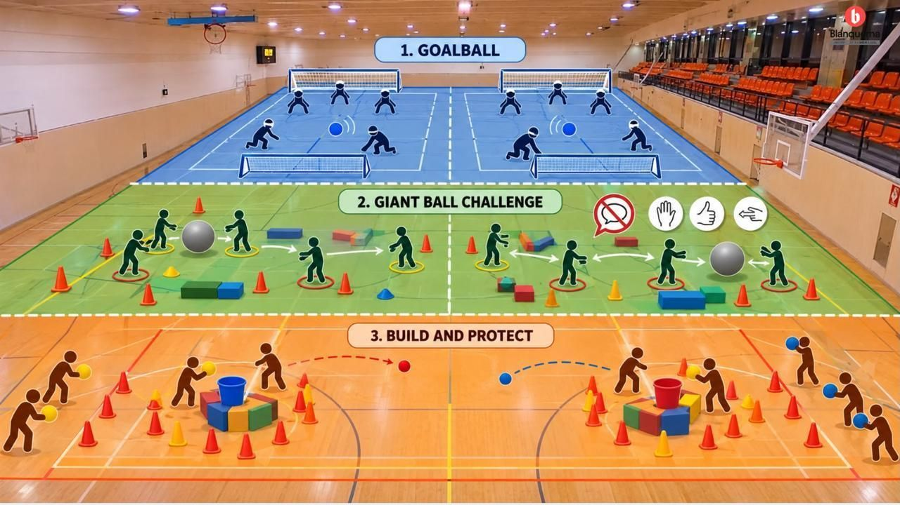

Alumnat de l'Escola Virolai
54 nens i nenes de 5è de Primària. Són els protagonistes: juguen, cooperen i descobreixen tres activitats inclusives.
4 de desembre de 2026 · Dia Internacional de les Persones amb Discapacitat
L'esport no deixa ningú fora
Sport4All és una jornada esportiva inclusiva per a l'alumnat de 5è de Primària de l'Escola Virolai, organitzada per estudiants de Sports Management de Blanquerna – Universitat Ramon Llull amb motiu del Dia Internacional de les Persones amb Discapacitat.
Avui és el dia! Gràcies a tothom per participar.
Sport4All neix a les aules del Grau en Sports Management de Blanquerna – Universitat Ramon Llull. És un projecte real, pensat i organitzat per estudiants, amb un objectiu clar: que els nens i nenes descobreixin l'esport adaptat i visquin la inclusió en primera persona.
El Dia Internacional de les Persones amb Discapacitat se celebra cada 3 de desembre. Nosaltres ens hi sumem l'endemà, el divendres 4 de desembre, amb un matí de joc, cooperació i esport compartit.
Hi participen 54 alumnes de 5è de Primària de l'Escola Virolai, repartits en sis equips. Aquí no hi ha eliminacions: es puntua sobretot el treball en equip, la participació i la inclusió.
“Quan tothom juga amb les mateixes regles, la discapacitat deixa de ser el primer que veus.”Equip organitzador de Sport4All
Una jornada privada, pensada per a l'alumnat de l'escola i feta possible per estudiants universitaris.
54 nens i nenes de 5è de Primària. Són els protagonistes: juguen, cooperen i descobreixen tres activitats inclusives.
L'equip organitzador. Coordinem les activitats, expliquem les normes, controlem els horaris i supervisem tota la jornada.
20 estudiants de la Fundació Blanquerna donen suport a la supervisió pràctica de cada activitat i al material.
6 estudiants de la classe de Gestió Esportiva s'encarreguen del sistema de puntuació de cada equip.
La col·laboració
Sport4All es fa en col·laboració amb l'Escola Virolai de Barcelona. L'escola hi aporta el seu alumnat; la universitat, l'organització i el coneixement en gestió esportiva i esport adaptat.
Projecte acadèmic del Grau en Sports Management · Facultat de Psicologia, Ciències de l'Educació i de l'Esport Blanquerna.
Estudiants organitzadors
Tres activitats, tres rondes i una cloenda amb diplomes per a tothom.
Divendres 4 de desembre de 2026 · 9:30 – 13:00 h
Horari, format de la competició i les tres activitats del matí. L'horari pot ajustar-se uns minuts el mateix dia.
Cada ronda dura 30 minuts: 5 per explicar l'activitat i les normes de seguretat, 20 per jugar i 5 per anotar la puntuació i canviar d'estació.
Arribada de l'alumnat i organització dels sis equips.
Presentació de les normes, el sistema de puntuació i les rotacions.
Cada equip comença en una de les tres activitats.
Primera rotació: els equips canvien d'activitat.
Fruita, aigua i snacks per a tothom. Temps per descansar i hidratar-se.
Segona rotació: tots els equips completen les tres activitats.
L'equip de puntuació revisa i suma els resultats.
Diplomes, premis i classificació final.
54 participants, 6 equips de 9. Cada equip es manté junt tot el matí i passa per les tres activitats.
| Ronda | Goalball | Giant Ball Challenge | Build and Protect |
|---|---|---|---|
| Ronda 1 | Equip 1 – 2 | Equip 3 – 4 | Equip 5 – 6 |
| Ronda 2 | Equip 5 – 6 | Equip 1 – 2 | Equip 3 – 4 |
| Ronda 3 | Equip 3 – 4 | Equip 5 – 6 | Equip 1 – 2 |
Distribució orientativa. Tres activitats al mateix temps, amb dos equips en cada una.
Normes comunes
Totes tres prioritzen la cooperació i la comunicació per damunt del resultat.
Joc d'origen paralímpic. Tots els jugadors porten antifaç i localitzen la pilota pel so dels cascavells.
Confiança · escolta · orientació
Cada equip porta una pilota gegant per un circuit passant-la entre companys situats dins de la seva anella.
Comunicació no verbal · coordinació
Cada equip construeix una defensa al voltant de la seva cistella i intenta encistellar pilotes toves a la de l'altre equip.
Precisió · estratègia · treball en equip

Cada activitat val 10 punts. Guanyar només en suma 1; els altres 9 premien com juga l'equip.
Projecte acadèmic · Blanquerna – Universitat Ramon Llull
35 persones fan possible Sport4All: estudiants organitzadors, estudiants del Diploma i voluntaris de Gestió Esportiva.
Estudiants de Sports Management. Coordinen les activitats, expliquen les normes, controlen els temps i supervisen la jornada.
De la Fundació Blanquerna. Supervisen la part pràctica de les activitats i ajuden amb el material i l'organització.
Avaluen cada equip amb una rúbrica específica per activitat i registren la puntuació.
Cada activitat té el seu equip fix, que no rota, per conèixer bé la seva estació.
4 estudiants del Diploma · 1 voluntari de puntuació · coordina Mireia
4 estudiants del Diploma · 1 voluntari de puntuació · coordina Ainhoa
4 estudiants del Diploma · 1 voluntari de puntuació · coordina Ian
Rebuda de l'alumnat, acreditacions i lliurament de materials a l'inici i al final.
Durant el descans: repartiment de fruita, aigua i snacks.
Volem donar visibilitat a l'esport adaptat i trencar prejudicis des de la infància, demostrant que una activitat esportiva es pot dissenyar perquè ningú es quedi a la graderia.
Com a futurs gestors esportius, també aprenem a organitzar esdeveniments pensant en l'accessibilitat des del primer dia, no com un afegit al final.
Totes les activitats estan pensades per jugar junts.
Tothom té un paper actiu. No hi ha eliminacions.
Es puntua com juga l'equip, no només el resultat.
Els nens descobreixen l'esport adaptat; els universitaris aprenen fent.
3 de desembre
Les Nacions Unides el van proclamar el 1992 per promoure els drets i el benestar de les persones amb discapacitat en tots els àmbits de la societat, també en l'esport. Celebrar-ho jugant junts és la nostra manera de sumar-nos-hi.
Patrocinadors i col·laboradors
Gràcies a les empreses i entitats que donen suport a Sport4All i el fan possible.
Encara som a temps d'afegir nous patrocinadors i col·laboradors. Si la teva empresa vol donar suport a l'esport inclusiu, parla amb l'equip organitzador.
4 de diciembre de 2026 · Día Internacional de las Personas con Discapacidad
El deporte no deja a nadie fuera
Sport4All es una jornada deportiva inclusiva para el alumnado de 5.º de Primaria de la Escola Virolai, organizada por estudiantes de Sports Management de Blanquerna – Universitat Ramon Llull con motivo del Día Internacional de las Personas con Discapacidad.
¡Hoy es el día! Gracias a todos por participar.
Sport4All nace en las aulas del Grado en Sports Management de Blanquerna – Universitat Ramon Llull. Es un proyecto real, pensado y organizado por estudiantes, con un objetivo claro: que los niños y niñas descubran el deporte adaptado y vivan la inclusión en primera persona.
El Día Internacional de las Personas con Discapacidad se celebra cada 3 de diciembre. Nosotros nos sumamos al día siguiente, el viernes 4 de diciembre, con una mañana de juego, cooperación y deporte compartido.
Participan 54 alumnos de 5.º de Primaria de la Escola Virolai, repartidos en seis equipos. Aquí no hay eliminaciones: se puntúa sobre todo el trabajo en equipo, la participación y la inclusión.
“Cuando todos juegan con las mismas reglas, la discapacidad deja de ser lo primero que ves.”Equipo organizador de Sport4All
Una jornada privada, pensada para el alumnado de la escuela y hecha posible por estudiantes universitarios.
54 niños y niñas de 5.º de Primaria. Son los protagonistas: juegan, cooperan y descubren tres actividades inclusivas.
El equipo organizador. Coordinamos las actividades, explicamos las normas, controlamos los horarios y supervisamos toda la jornada.
20 estudiantes de la Fundació Blanquerna apoyan la supervisión práctica de cada actividad y el material.
6 estudiantes de la clase de Gestión Deportiva se encargan del sistema de puntuación de cada equipo.
La colaboración
Sport4All se hace en colaboración con la Escola Virolai de Barcelona. La escuela aporta a su alumnado; la universidad, la organización y el conocimiento en gestión deportiva y deporte adaptado.
Proyecto académico del Grado en Sports Management · Facultad de Psicología, Ciencias de la Educación y del Deporte Blanquerna.
Estudiantes organizadores
Tres actividades, tres rondas y un cierre con diplomas para todos.
Viernes 4 de diciembre de 2026 · 9:30 – 13:00 h
Horario, formato de la competición y las tres actividades de la mañana. El horario puede ajustarse unos minutos el mismo día.
Cada ronda dura 30 minutos: 5 para explicar la actividad y las normas de seguridad, 20 para jugar y 5 para anotar la puntuación y cambiar de estación.
Llegada del alumnado y organización de los seis equipos.
Presentación de las normas, el sistema de puntuación y las rotaciones.
Cada equipo empieza en una de las tres actividades.
Primera rotación: los equipos cambian de actividad.
Fruta, agua y snacks para todos. Tiempo para descansar e hidratarse.
Segunda rotación: todos los equipos completan las tres actividades.
El equipo de puntuación revisa y suma los resultados.
Diplomas, premios y clasificación final.
54 participantes, 6 equipos de 9. Cada equipo se mantiene unido toda la mañana y pasa por las tres actividades.
| Ronda | Goalball | Giant Ball Challenge | Build and Protect |
|---|---|---|---|
| Ronda 1 | Equipo 1 – 2 | Equipo 3 – 4 | Equipo 5 – 6 |
| Ronda 2 | Equipo 5 – 6 | Equipo 1 – 2 | Equipo 3 – 4 |
| Ronda 3 | Equipo 3 – 4 | Equipo 5 – 6 | Equipo 1 – 2 |
Distribución orientativa. Tres actividades a la vez, con dos equipos en cada una.
Normas comunes
Las tres priorizan la cooperación y la comunicación por encima del resultado.
Juego de origen paralímpico. Todos los jugadores llevan antifaz y localizan el balón por el sonido de los cascabeles.
Confianza · escucha · orientación
Cada equipo lleva una pelota gigante por un circuito pasándola entre compañeros situados dentro de su aro.
Comunicación no verbal · coordinación
Cada equipo construye una defensa alrededor de su cesta e intenta encestar pelotas blandas en la del otro equipo.
Precisión · estrategia · trabajo en equipo
Cada actividad vale 10 puntos. Ganar solo suma 1; los otros 9 premian cómo juega el equipo.
Proyecto académico · Blanquerna – Universitat Ramon Llull
35 personas hacen posible Sport4All: estudiantes organizadores, estudiantes del Diploma y voluntarios de Gestión Deportiva.
Estudiantes de Sports Management. Coordinan las actividades, explican las normas, controlan los tiempos y supervisan la jornada.
De la Fundació Blanquerna. Supervisan la parte práctica de las actividades y ayudan con el material y la organización.
Evalúan a cada equipo con una rúbrica específica por actividad y registran la puntuación.
Cada actividad tiene su equipo fijo, que no rota, para conocer bien su estación.
4 estudiantes del Diploma · 1 voluntario de puntuación · coordina Mireia
4 estudiantes del Diploma · 1 voluntario de puntuación · coordina Ainhoa
4 estudiantes del Diploma · 1 voluntario de puntuación · coordina Ian
Recepción del alumnado, acreditaciones y entrega de materiales al inicio y al final.
Durante el descanso: reparto de fruta, agua y snacks.
Queremos dar visibilidad al deporte adaptado y romper prejuicios desde la infancia, demostrando que una actividad deportiva puede diseñarse para que nadie se quede en la grada.
Como futuros gestores deportivos, también aprendemos a organizar eventos pensando en la accesibilidad desde el primer día, no como un añadido al final.
Todas las actividades están pensadas para jugar juntos.
Todos tienen un papel activo. No hay eliminaciones.
Se puntúa cómo juega el equipo, no solo el resultado.
Los niños descubren el deporte adaptado; los universitarios aprenden haciendo.
3 de diciembre
Naciones Unidas lo proclamó en 1992 para promover los derechos y el bienestar de las personas con discapacidad en todos los ámbitos de la sociedad, también en el deporte. Celebrarlo jugando juntos es nuestra manera de sumarnos.
Patrocinadores y colaboradores
Gracias a las empresas y entidades que apoyan Sport4All y lo hacen posible.
Aún estamos a tiempo de añadir nuevos patrocinadores y colaboradores. Si tu empresa quiere apoyar el deporte inclusivo, habla con el equipo organizador.
4 December 2026 · International Day of Persons with Disabilities
Sport leaves no one behind
Sport4All is an inclusive sports day for Year 5 primary pupils from Escola Virolai, organised by Sports Management students at Blanquerna – Universitat Ramon Llull to mark the International Day of Persons with Disabilities.
Today's the day! Thank you all for taking part.
Sport4All was born in the classrooms of the Sports Management degree at Blanquerna – Universitat Ramon Llull. It is a real project, designed and run by students, with one clear goal: to let children discover adapted sport and experience inclusion first-hand.
The International Day of Persons with Disabilities is celebrated every 3 December. We join in the following day, Friday 4 December, with a morning of play, cooperation and shared sport.
54 Year 5 pupils from Escola Virolai take part, split into six teams. There are no eliminations: teams are scored mainly on teamwork, participation and inclusion.
“When everyone plays by the same rules, disability is no longer the first thing you see.”Sport4All organising team
A private event, designed for the school's pupils and made possible by university students.
54 boys and girls in Year 5. They are the stars of the day: they play, cooperate and discover three inclusive activities.
The organising team. We coordinate the activities, explain the rules, keep time and supervise the whole day.
20 students from Fundació Blanquerna support the hands-on supervision of each activity and the equipment.
6 students from the Sports Management class run the scoring system for every team.
The partnership
Sport4All is run in partnership with Escola Virolai in Barcelona. The school brings its pupils; the university brings the organisation and expertise in sports management and adapted sport.
Academic project of the Sports Management degree · Blanquerna Faculty of Psychology, Education and Sport Sciences.
Student organisers
Three activities, three rounds and a closing ceremony with certificates for everyone.
Friday 4 December 2026 · 9:30 am – 1:00 pm
Schedule, competition format and the three activities of the morning. Times may shift by a few minutes on the day.
Each round lasts 30 minutes: 5 to explain the activity and safety rules, 20 to play and 5 to record scores and rotate.
Pupils arrive and are organised into six teams.
Rules, scoring system and rotations explained.
Each team starts at one of the three activities.
First rotation: teams move to a new activity.
Fruit, water and snacks for everyone. Time to rest and rehydrate.
Second rotation: every team completes all three activities.
The scoring team reviews and adds up the results.
Certificates, awards and final standings.
54 participants, 6 teams of 9. Each team stays together all morning and completes all three activities.
| Round | Goalball | Giant Ball Challenge | Build and Protect |
|---|---|---|---|
| Round 1 | Team 1 – 2 | Team 3 – 4 | Team 5 – 6 |
| Round 2 | Team 5 – 6 | Team 1 – 2 | Team 3 – 4 |
| Round 3 | Team 3 – 4 | Team 5 – 6 | Team 1 – 2 |
Indicative allocation. Three activities run at the same time, with two teams at each.
Common rules
All three put cooperation and communication ahead of the result.
A game with Paralympic roots. All players wear blindfolds and locate the ball by the sound of its bells.
Trust · listening · orientation
Each team moves a giant ball along a course, passing it between teammates standing inside their hoops.
Non-verbal communication · coordination
Each team builds a defence around its basket while trying to throw soft balls into the other team's basket.
Accuracy · strategy · teamwork
Each activity is worth 10 points. Winning adds just 1; the other 9 reward how the team plays.
Academic project · Blanquerna – Universitat Ramon Llull
35 people make Sport4All happen: student organisers, Diploma students and Sports Management volunteers.
Sports Management students. They coordinate the activities, explain the rules, keep time and supervise the day.
From Fundació Blanquerna. They supervise the practical side of the activities and help with equipment and logistics.
They assess each team with an activity-specific rubric and record the scores.
Each activity has a fixed team that does not rotate, so they know their station inside out.
4 Diploma students · 1 scoring volunteer · led by Mireia
4 Diploma students · 1 scoring volunteer · led by Ainhoa
4 Diploma students · 1 scoring volunteer · led by Ian
Greeting pupils, registration and handing out materials at the start and end.
During the break: handing out fruit, water and snacks.
We want to raise the profile of adapted sport and break down prejudice from childhood, showing that a sports activity can be designed so that no one is left on the sidelines.
As future sports managers, we are also learning to build accessibility into events from day one, not as an afterthought.
Every activity is designed for playing together.
Everyone has an active role. No eliminations.
We score how the team plays, not just the result.
Children discover adapted sport; university students learn by doing.
3 December
The United Nations proclaimed it in 1992 to promote the rights and well-being of persons with disabilities in every area of society, including sport. Celebrating it by playing together is our way of taking part.
Sponsors and partners
Thank you to the companies and organisations that support Sport4All and make it possible.
There is still time to add new sponsors and partners. If your company would like to support inclusive sport, get in touch with the organising team.